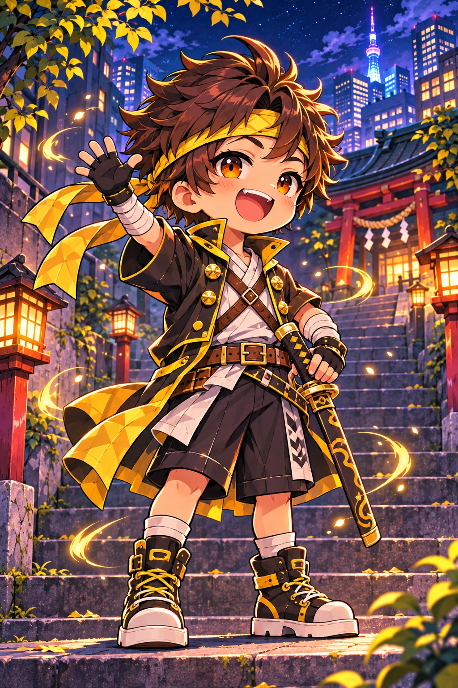
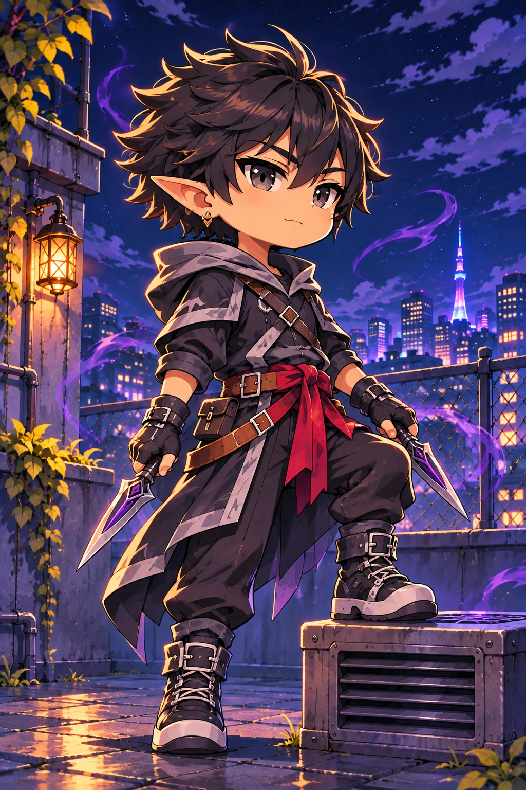
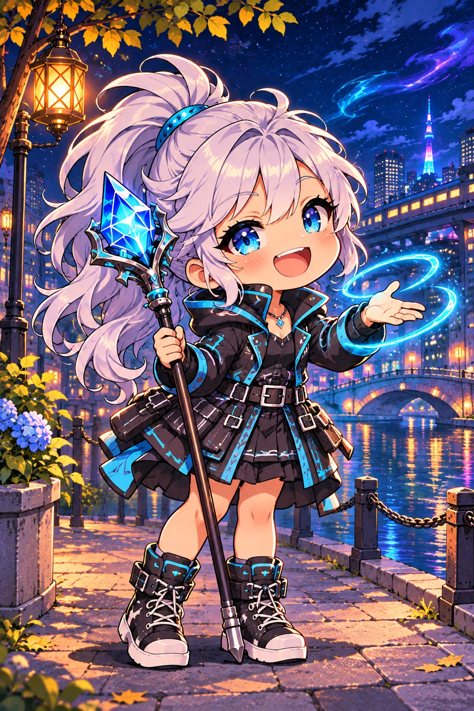
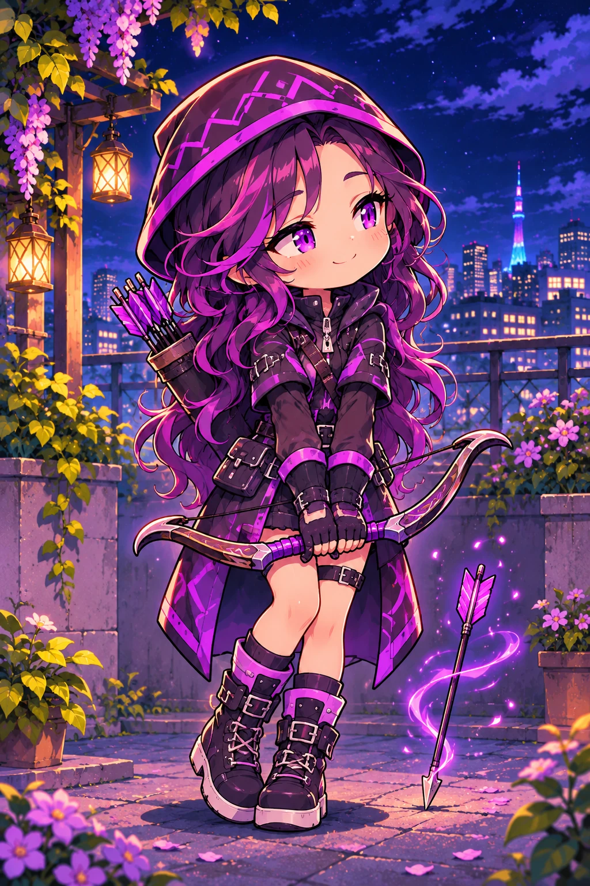
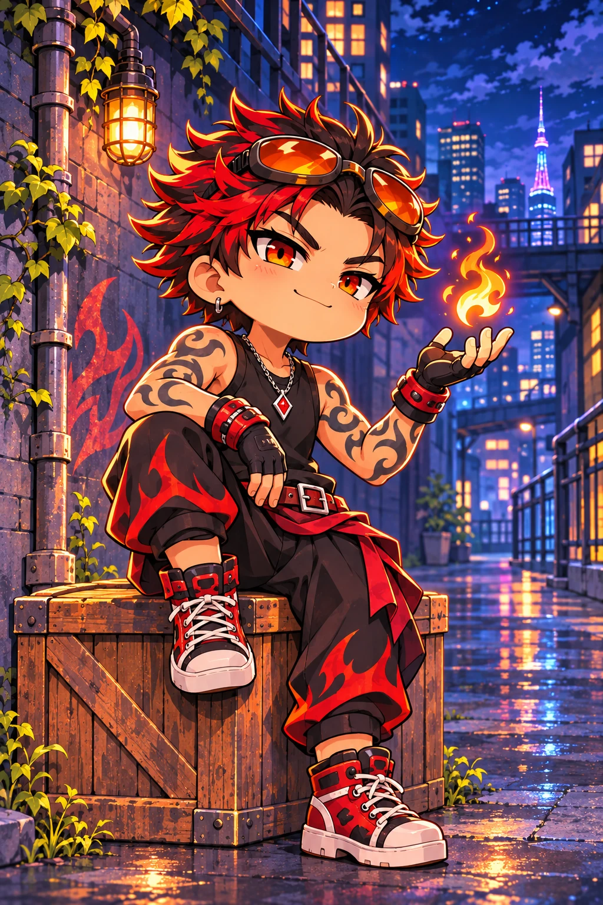
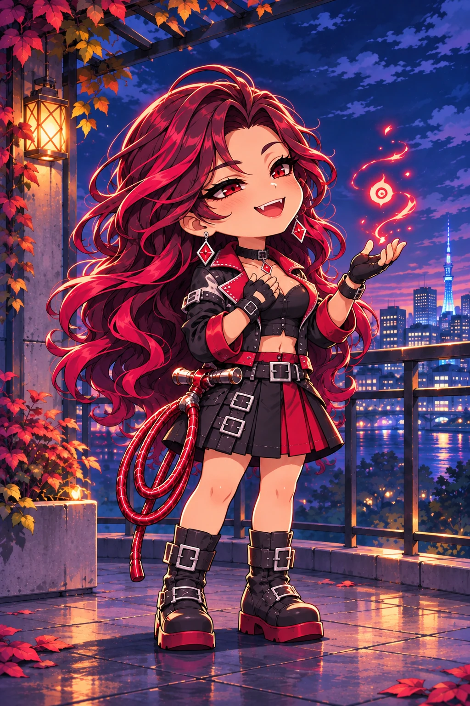

STILL LOOKING TOWARD TOMORROW
KAIRO
Brave, bright and determined to keep moving.
An energetic, optimistic samurai who refuses to let the loss of his family take away his courage. Kairo meets the next fight with a katana and a belief that tomorrow can be better.
INCREASED HEALTH
Kairo has more health, giving him greater endurance in battle.






THE TEMPLE HE LOST
Kairo was born into a family of samurai and learned their way of the blade. At ten, his life changed when a spiritual anomaly reached the family temple. Spirits attacked, killing everyone inside. Kairo managed to escape.
He has lived on the streets since that day. The loss never erased his courage or his optimism: the fourteen-year-old samurai still faces the world with energy and hope.